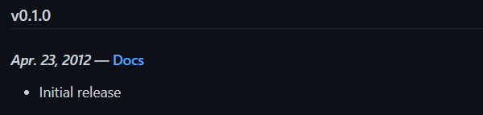
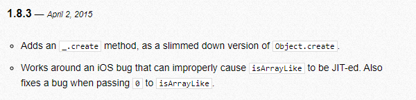
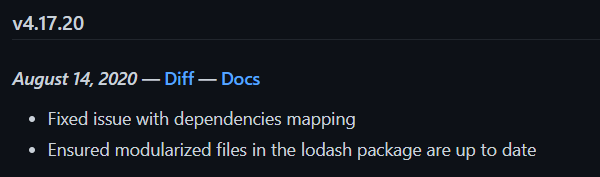
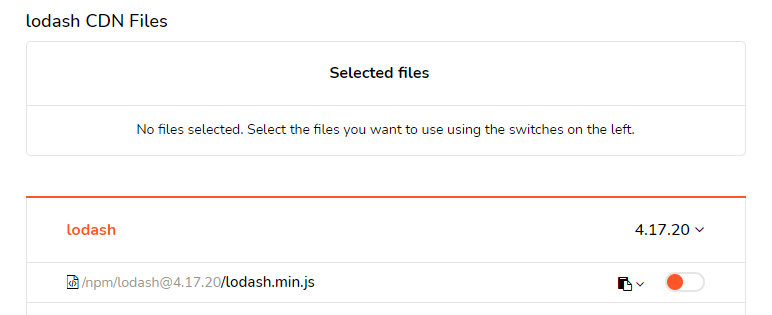

_.LODASH
by @onc157 (Kulev Aleksandr)
What is Lodash?
What is Lodash?
- Lodash is a JavaScript library that helps programmers write more concise and maintainable JavaScript.
- Lodash helps programmers write more concise and maintainable JavaScript.
A little history...
In 2009, the Underscore library appeared. This library gained great popularity and at one time was one of the best tools for a Javascript developer.

But the popularity of Underscore library began to decline, and thus on April 23, 2012 the Lodash library appeared
Lodash draws most of its ideas from Underscore.js and now receives maintenance from the original contributors to Underscore.js.
Lodash joined the Dojo Foundation in 2013, and via the jQuery Foundation and JS Foundation, is now part of the OpenJS Foundation.
The last update for Underscore was released on April 2, 2015.
Currently, Lodash has active support and if you believe the information from the official website, in 2021 a large update of version 5.0.0 should be released, which will contain many interesting features.
Lodash is effectively a play on words on underscore - "low dash", what does a dash - look like when it's a bit lower to the ground? Of course as underscore
Why lodash?
Lodash makes JavaScript easier by taking the hassle out of working with arrays, numbers, objects, strings and other data types, enhancing productivity and code readability.
Lodash’s modular methods are great for:
- Iterating arrays, objects, & strings
- Manipulating & testing values
- Creating composite functions
How install Lodash?
In a browser:
Use CDN:
Using npm:
$ npm i -g npm
$ npm i --save lodash
In Node.js:
// Load the full build.
var _ = require('lodash');
// Load the core build.
var _ = require('lodash/core');
// Load the FP build for immutable auto-curried
// iteratee-first data-last methods.
var fp = require('lodash/fp');
// Load method categories.
var array = require('lodash/array');
var object = require('lodash/fp/object');
// Cherry-pick methods for smaller browserify/rollup/webpack bundles.
var at = require('lodash/at');
var curryN = require('lodash/fp/curryN');
Arrays
_.findIndex
var users = [
{ 'user': 'barney', 'active': false },
{ 'user': 'fred', 'active': false },
{ 'user': 'pebbles', 'active': true }
];
_.findIndex(users, function(o) { return o.user == 'barney'; });
// => 0
// The `_.matches` iteratee shorthand.
_.findIndex(users, { 'user': 'fred', 'active': false });
// => 1
// The `_.matchesProperty` iteratee shorthand.
_.findIndex(users, ['active', false]);
// => 0
// The `_.property` iteratee shorthand.
_.findIndex(users, 'active');
// => 2
_.compact
_.compact([0, 1, false, 2, '', 3]);
// => [1, 2, 3]
_.intersection
_.intersection([2, 1], [2, 3]);
// => [2]
_.union
_.union([2], [1, 2]);
// => [2, 1]
_.concat
var array = [1];
var other = _.concat(array, 2, [3], [[4]]);
console.log(other);
// => [1, 2, 3, [4]]
console.log(array);
// => [1]]
Objects
_.get
var object = { 'a': [{ 'b': { 'c': 3 } }] };
_.get(object, 'a[0].b.c');
// => 3
_.get(object, ['a', '0', 'b', 'c']);
// => 3
_.get(object, 'a.b.c', 'default');
// => 'default'
_.omit
var object = { 'a': 1, 'b': '2', 'c': 3 };
_.omit(object, ['a', 'c']);
// => { 'b': '2' }
_.mapKeys
_.mapKeys({ 'a': 1, 'b': 2 }, function(value, key) {
return key + value;
});
// => { 'a1': 1, 'b2': 2 }
_.mapValues
var users = {
'fred': { 'user': 'fred', 'age': 40 },
'pebbles': { 'user': 'pebbles', 'age': 1 }
};
// The `_.property` iteratee shorthand.
_.mapValues(users, 'age');
// => { 'fred': 40, 'pebbles': 1 } (iteration order is not guaranteed)
Collections
_.map
function square(n) {
return n * n;
}
_.map([4, 8], square);
// => [16, 64]
_.map({ 'a': 4, 'b': 8 }, square);
// => [16, 64] (iteration order is not guaranteed)
var users = [
{ 'user': 'barney' },
{ 'user': 'fred' }
];
// The `_.property` iteratee shorthand.
_.map(users, 'user');
// => ['barney', 'fred']
_.find
var users = [
{ 'user': 'barney', 'age': 36, 'active': true },
{ 'user': 'fred', 'age': 40, 'active': false },
{ 'user': 'pebbles', 'age': 1, 'active': true }
];
_.find(users, function(o) { return o.age < 40; });
// => object for 'barney'
// The `_.matches` iteratee shorthand.
_.find(users, { 'age': 1, 'active': true });
// => object for 'pebbles'
// The `_.matchesProperty` iteratee shorthand.
_.find(users, ['active', false]);
// => object for 'fred'
// The `_.property` iteratee shorthand.
_.find(users, 'active');
// => object for 'barney'
_.filter
var users = [
{ 'user': 'barney', 'age': 36, 'active': true },
{ 'user': 'fred', 'age': 40, 'active': false }
];
_.filter(users, function(o) { return !o.active; });
// => objects for ['fred']
// The `_.matches` iteratee shorthand.
_.filter(users, { 'age': 36, 'active': true });
// => objects for ['barney']
// The `_.matchesProperty` iteratee shorthand.
_.filter(users, ['active', false]);
// => objects for ['fred']
// The `_.property` iteratee shorthand.
_.filter(users, 'active');
// => objects for ['barney']
_.groupBy
_.groupBy([6.1, 4.2, 6.3], Math.floor);
// => { '4': [4.2], '6': [6.1, 6.3] }
// The `_.property` iteratee shorthand.
_.groupBy(['one', 'two', 'three'], 'length');
// => { '3': ['one', 'two'], '5': ['three'] }
_.sample
_.sample([1, 2, 3, 4]);
// => 2